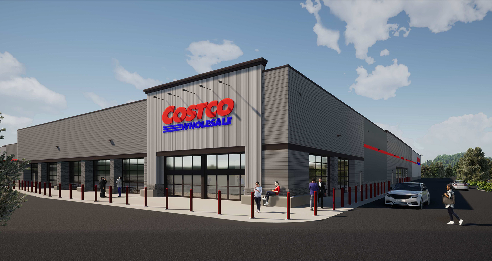
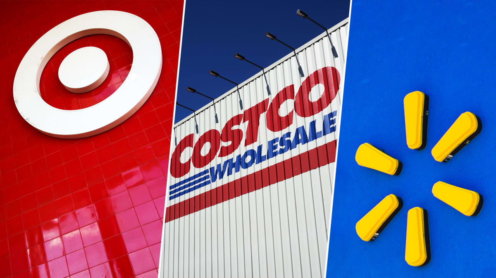
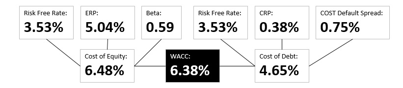
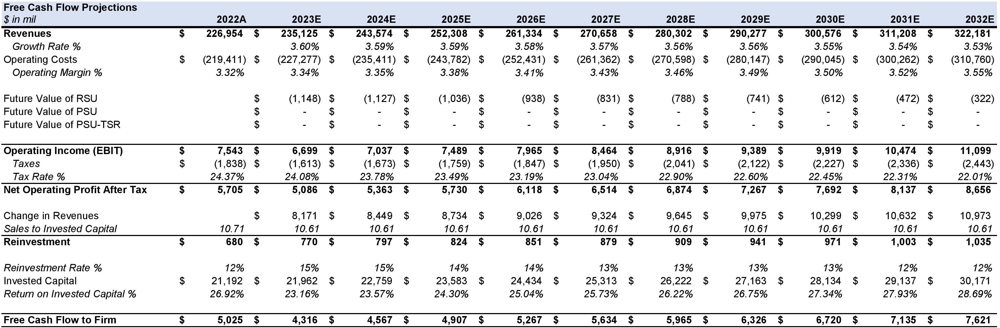
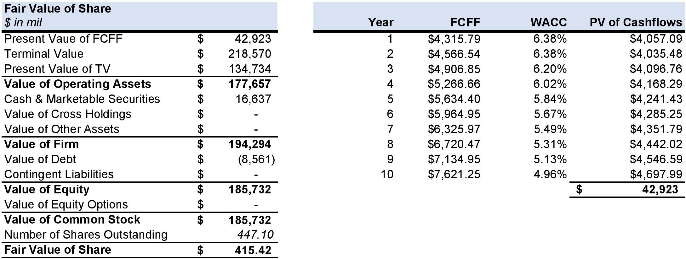

Costco Wholesale - The state of US Economy?
When it comes to running a successful retail business, Costco has a unique approach that's both interesting and effective. They've managed to build a thriving business by focusing on offering high-quality goods and services to their members at incredibly low prices.     
So, what's their secret?
First, Costco's membership-based model is what sets them apart. Customers pay an annual fee to become members, which not only gives them access to the store but also enables Costco to keep their prices low. After all, why charge a fortune for a product when you have a loyal customer base willing to pay for the privilege of shopping in your store?
Costco's low prices are another crucial aspect of their business model. They achieve this by buying in bulk, negotiating with suppliers for better deals, and keeping overhead costs to a minimum. And let's not forget about their private label brands like Kirkland Signature, which offer excellent value for money.
But what about their limited product selection? Surely, customers want a wide range of options to choose from? Not necessarily. Costco's no-frills approach means they offer a carefully curated selection of high-quality products. By limiting the number of products on offer, they can negotiate better deals with suppliers, which ultimately benefits their customers.
And while some might find the lack of frills at Costco's stores underwhelming, their no-nonsense approach has a certain charm. After all, who needs fancy displays when you can wander the aisles and discover hidden gems like a 5-pound bag of gummy bears or a 10-gallon drum of mayonnaise?
Costco's business model might not be for everyone, but it's certainly interesting. By focusing on the basics and keeping prices low, they've managed to build a loyal following of customers who appreciate their straightforward approach to retail.
Company’s Strengths: (Strong brand reputation) Costco is recognized as a leading warehouse club retailer known for its quality products and value for money. (Wide product selection) Costco offers a diverse range of products, including groceries, electronics, household items, and more, providing customers with a one-stop shopping experience. (Bulk purchasing power) Costco's ability to buy products in bulk enables them to negotiate lower prices from suppliers, leading to competitive pricing for customers. (Membership model) The membership-based business model creates a loyal customer base and generates recurring revenue for Costco. (Efficient operations) Costco focuses on efficient supply chain management, inventory control, and streamlined store layouts to minimize costs and maximize profitability.
Company’s Weaknesses: (Limited product variety) While Costco offers a wide range of products, the selection within each category can be limited compared to traditional retailers, potentially limiting customer choices. (Membership fees) Some customers may be deterred by the annual membership fees, which could restrict their willingness to join and shop at Costco. (Large store format) The large warehouse-style stores may be overwhelming for some customers, and the bulk packaging may not be suitable for all individuals or households.
Potential Opportunities: (Online expansion) Costco can continue to invest in its e-commerce platform to capture a larger share of the growing online retail market and reach customers who prefer shopping online. (International growth) Expanding into new international markets presents opportunities for Costco to tap into new customer bases and benefit from increasing global consumer demand. (Private label products) By expanding its range of private label products, Costco can enhance its margins, differentiate itself from competitors, and strengthen customer loyalty.
Threats that company might face: (Intense competition) The retail industry, including the warehouse club segment, is highly competitive, with rivals like Walmart and Sam's Club. Increased competition can impact Costco's market share and profitability. (Price sensitivity) Customers are price-conscious and may switch to competitors if they offer lower prices or discounts. (Economic downturns) During economic downturns, consumer spending may decline, impacting Costco's sales and profitability. (Online retail growth) The continued growth of online retail giants like Amazon poses a threat to traditional brick-and-mortar retailers, including Costco, as more customers opt for the convenience of online shopping.
Competitors: (Walmart) A multinational retail corporation known for its wide range of products and competitive pricing. (Sam's Club) A membership-based warehouse club owned by Walmart, offering bulk purchases and exclusive deals. (Target) A popular retail chain that provides a diverse selection of products, including groceries, clothing, and household items. (BJ's Wholesale Club) A membership-based warehouse club offering discounted prices on a variety of products. (Amazon Prime) An online retail giant that offers a wide range of products with fast shipping and exclusive deals for Prime members. (Aldi) A global discount supermarket chain known for its low prices and limited product selection. (Kroger) One of the largest supermarket chains in the United States, offering a wide variety of groceries and household items. (Best Buy) A leading electronics retailer known for its extensive selection of consumer electronics and appliances. (Costco's own Kirkland Signature brand) A private label brand exclusive to Costco, offering quality products at competitive prices. (Dollar General) A discount retailer that specializes in low-cost household essentials, groceries, and general merchandise.
Corporate Governance: Costco's ISS Governance Quality Score is as of April 1, 2023 is 3.0
Valuation Summary
Based on the key pointers and fundamentals, here is my summary of my valuation of Costco.
Discounted Cash Flow Analysis: My base case analysis, with a Discount Rate of 6.38% based on Cost of Equity based on CAPM (Capital Asset Pricing Model) and a Terminal FCF Growth Rate of 1%, produced fair value of $415.42.
Equity RSU's: Costco issued about $1.2 billion worth of restricted stock units in Financial Year 2022. I forecast that it will continue to decline the amount of RSU's every year thereon, which is treated as operating expense in forecasted period for next 10 years.
Current Share Price: At $415.42, Costco appears overvalued to the implied intrinsic value from my valuation methodologies.
Target Price: As a result, I selected $442.34 as my target price. Noting the fact that, the target price is based on 12 months.
Thank you for reading! Check out my valuation by downloading the Costco's Analysis below.